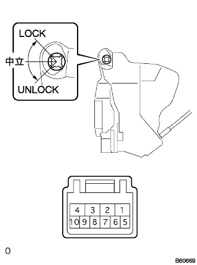
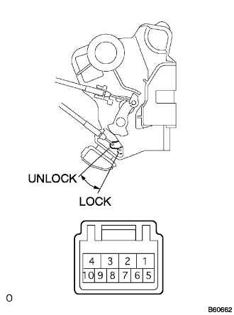

Front door lock ASSY RH (Motoruki) Single inspection |
| 1. Front door lock ASSY RH (Motoruki) inspection |
Conduct inspection (door control switch, key linked)
|  |
Use SST (Toyota Electrical Tester) to inspect the conduct between each terminal at each switch lever.
| Switch lever | Terminal number | standard |
|---|---|---|
| Lock | 6 terminals ← → 8 terminals | There is an conductor |
| Neutral | - | - |
| Unlock | 5 terminals ← → 8 terminals | There is an conductor |
Door lock operation and position switch conduct inspection
|  |
Use a SST (Toyota Electrical Tester) to check the door lock operation and position switch continuation when the battery voltage is applied between the motor terminals in the door lock.
| Connection terminal number | Operation (door lock) | Standards (position switch) |
|---|---|---|
| Battery Plus ← → 4 terminal battery minus ← → 1 terminal | Lock | 7 terminals ← → 8 None of terminals |
| Battery Plus ← → 1 terminal battery minus ← → 4 terminal | Unlock | 7 terminals ← → 8 terminal conduction |